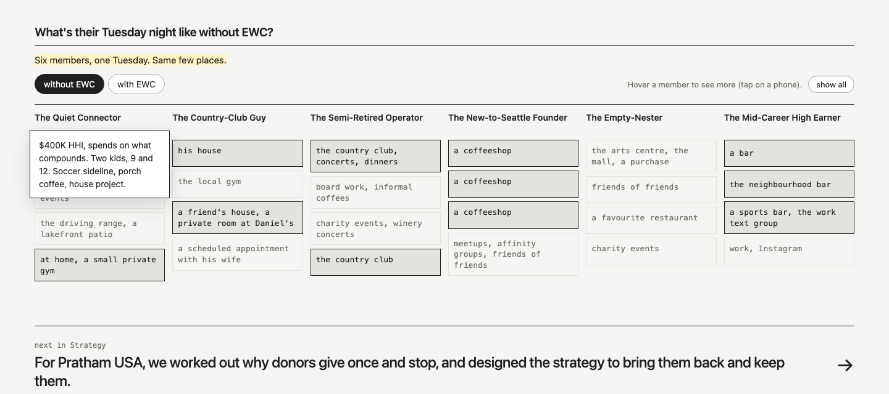
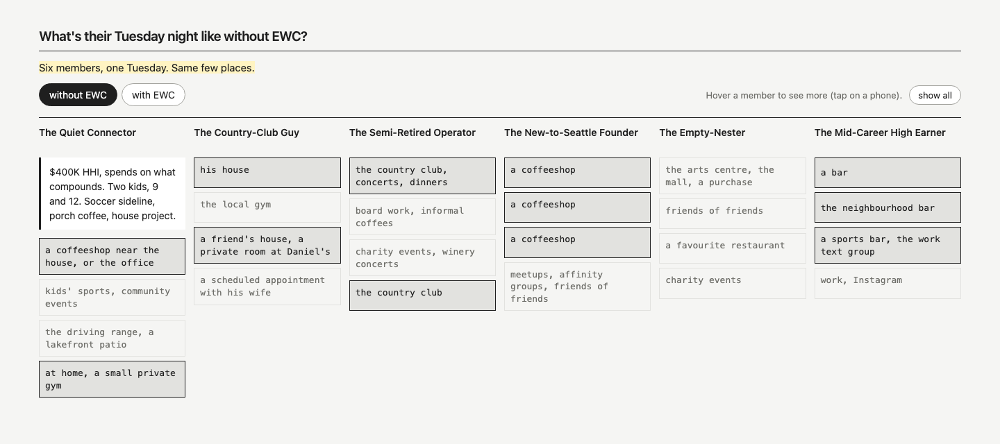
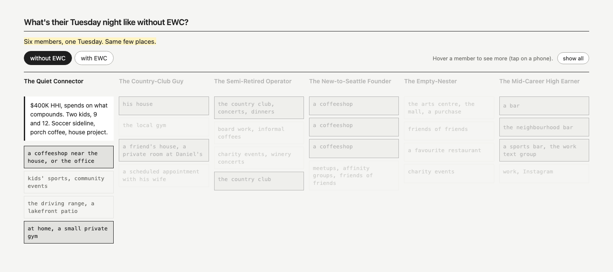
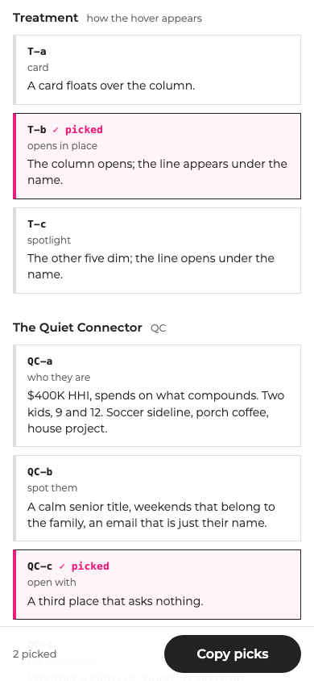
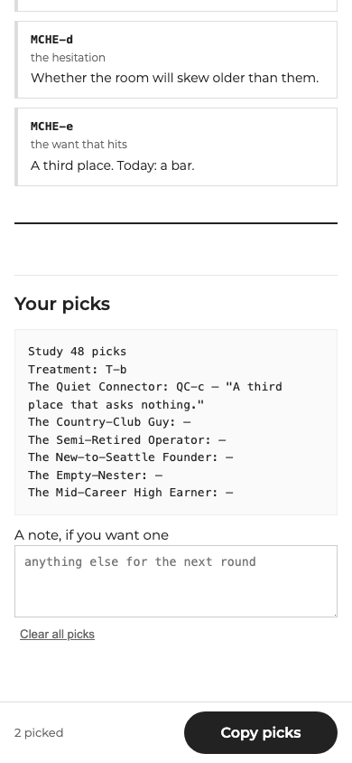

Study 48 · 27 October 2026 · Kahran
EWC, a hover for each Tuesday
47's page with a hover on each member's evening. Below the page: the options for every member and three ways the hover can appear, each with a code. Tap the ones you like (more than one is fine), then press Copy picks at the bottom and paste it back. The page updates as you tap, so you can try each one. Tap a member on the page to see their hover; on a phone, "show all" opens all six.
"maybe we could have a onHover for each of them. We could do a quick study for the [48] where you could give me some options for the hovers for all of the different personas, and I can tell you which ones to choose."
Kahran, 27 Oct, on Study 47Open the page in its own tab, with your picks





Every option is word for word from the EWC sales kit, the brand guide, the EWC handoff or the founders' workshop board (copy.json names each source). "Our pairing" = we chose which member a line goes with. The three treatment lines are ours.